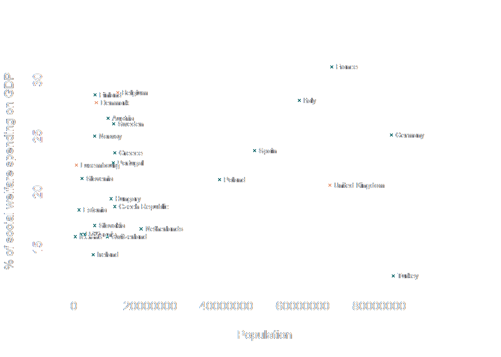

Blog
I share my leisure and coursework projects in the spirit of open science and showing my work as I learn. The posts do not reflect any form of scientific insight, but random thoughts that stimulate my curiosity at the time.Contact me
LinkedInCiteless bookmarklet #
Citeless removes citations of author and year to improve readability and notetaking speed when
working with research papers
(Brundisch, 2022)
I created a bookmarklet to solve a problem I came across today - long lists of citations within a
research paper impacting its readability. Check it out on
my GitHub repository
or just drag this link to your bookmark bar:
citeless
Rainy and sunny days in German towns #
Today, I wondered about which German towns have lovely weather. I explored some data on rainy and sunny days for all German towns. The results are very interesting: First, you might want to move to Rügen in the Baltic Sea, and second, the relation of rain to sunshine isn't as simple as I imagined, having no experience with weather data. See the full R Markdown protocol and the widget I created with plotly
Haldane's principle, social welfare spending and population size #
In the essay "On Being the Right Size", Haldane ponders animals' anatomical and physiological features as function of their size. In the last paragraphs, he suggests a corresponding relation between a state's size and its organizational structure, stating that socialism works best in small states. Inspired by this, I plotted European states' social welfare spending against their population size. See the full R Markdown protocol.
More data viz in JavaScript - Whatsapp edition #
I spent another evening working on my skill to design plots in JavaScript with the Vega-Lite library. This time, I used a subset of the temporal data of one of my chat logs. Although the visualisations don't communicate information efficiently and wouldn't fit most journal's guidelines, I am surprised by how much I enjoy them aesthetically. I am going to post the write-up of some of my surface level analysis on here soon.
Data viz in JavaScript #
I spent this evening messing around with the JS Vega-Lite library to display simple graphs. Being new to JavaScript, even simple plots took some time to figure out. I used a tiny subset of the data from the predator-prey simulation experiment I conducted last semester for this exercise. I am going to provide a full write-up of the experiment, the code, and data soon.
Advent of Code 2021 #
## Count the number of times a depth measurement increases from the previous measurement.
data <- read.table( "Advent of Code 1.txt" )
solutions <- rep( 0 , 50 )
counter <- 0
for (i in ( 1 : (length(data $ V1) - 1 ))) {
if (data $ V1[i] <- dat $ V1[i + 1 ]) {
counter <- counter + 1
}
}
solutions[ 1 ] <- counter
Over the past days, I attempted to solve some of the coding challenges of Advent of Code 2021 by Eric Wastl. While my code is still awkward and barely annotated, there aren't many solutions on GitHub written in R, so I wanted to share my work so far. You can find my code for the first ten puzzles as of today on my GitHub repository. To read the full tasks and get sample data to test my code, check the website of the project.